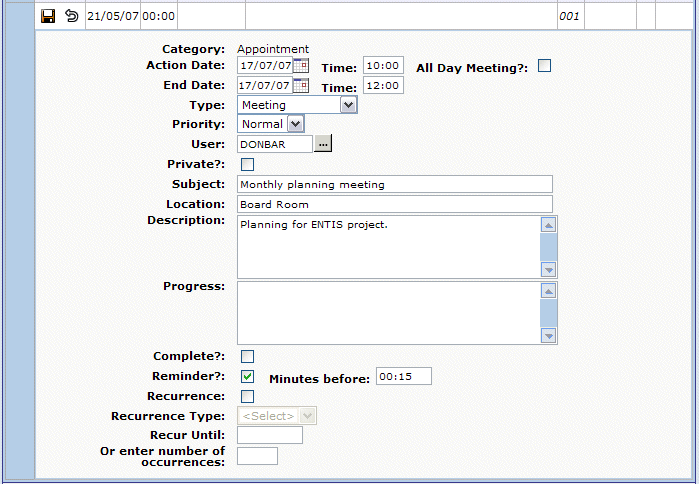
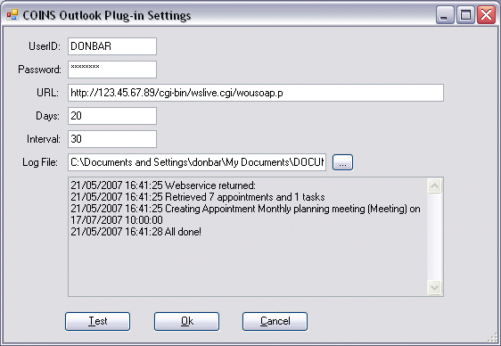
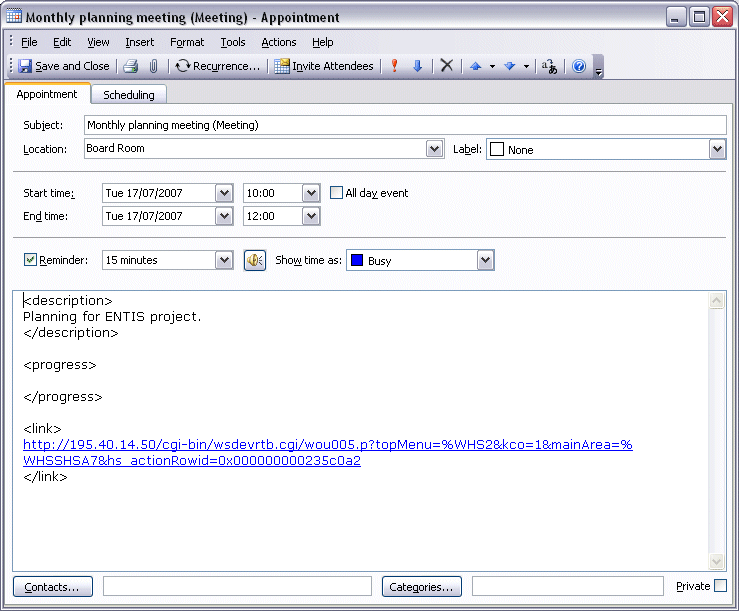

Outlook Integration in
If Outlook integration has been set up, tasks and appointments you set up in are copied to Microsoft Outlook®, and are synchroned at regular intervals. Any changes you make to these tasks and appointments in will be replicated in Outlook, and any changes you make in Outlook will be replicated in .
- Entries you originally set up in Outlook will not be copied to or updated in .
- If you delete an entry in Outlook that you created in , the replication process will create a new Outlook entry next time it runs.
When you set up a task or appointment in :
- Enter the subject you want to appear as the subject in Outlook, as well as the description you want to appear in .
- To set up a task or appointment so that Outlook will issue a reminder, the Reminder? box and enter the number of minutes (or hours and minutes) before the task or appointment time that you want Outlook to remind you.

The replication process updates entries a pre-defined number of days ahead. Tasks or appointments that occur within that number of days will be copied to Outlook the next time the replication process runs. If you want to update Outlook immediately, click the button in the Outlook toolbar, then click Test.

The task or appointment will then appear in Outlook. The body of the appointment in Outlook shows the text from the Description and Progress fields from , between XML tags, and a link to the entry in . You can click the link to open the entry in .
